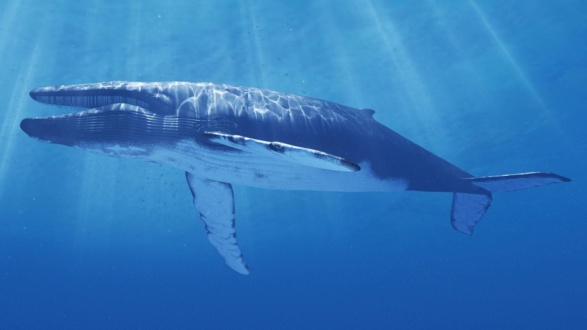
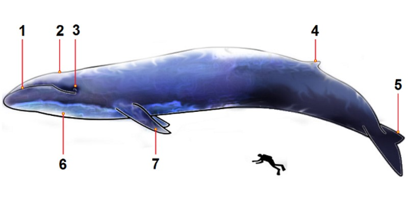

Als jij denkt aan het grootste dier ter wereld, waar denk jij dan aan? Aan een olifant? Of misschien aan een walvis? Die dieren zijn misschien groot, maar het grootste dier ter wereld is de blauwe vinvis. Maar hoe groot is hij dan en hoeveel weegt hij?
Algemeen
 De blauwe vinvis wordt zo genoemd door de blauw-grijzige kleur van zijn huid. En het is een vinvis, want ja hij heeft een vin op de achterkant van zijn rug. De blauwe vinvis is niet alleen het grootste dier dat nu leeft, maar ook het grootste dier dat ooit geleefd heeft in de geschiedenis. Het is natuurlijk lastig om als klein mens naar een blauwe vinvis te gaan en er naast te gaan zwemmen om hem te filmen. Dus worden er drones gebruikt. Klik hier voor een filmpje van de telegraaf waar een drone een blauwe vinvis heeft gefilmd. Dat filmpje is vooral van bovenaf. Dus hier is ook een filmpje van een blauwe vinvis maar dan in het water gefilmd.
Het uiterlijk
De blauwe vinvis wordt erg lang. Een volwassen vinvis wordt ongeveer tussen de 25 en de 30 meter. En wat bijzonder is dat bij dit dier de vrouwtjes het grootst worden en dus niet de mannen. Een mannetjes blauwe vinvis wordt ongeveer 25 meter en een vrouwtje wordt ongeveer 27 meter. Een lang dier is natuurlijk ook erg zwaar. Zo wordt een volwassen blauwe vinvis al snel 100-170 ton. Dat is dus ongeveer 2000-2500x zoveel als een gemiddel mens. Alleen de tong al weegt 2 ton. Dat is meer dan een olifant.
 De blauwe vinvis heeft kleine ogen (nummer 3), dus een slecht zicht en kan ook niet zo goed ruiken. Vergeleken andere vinvissen heeft de blauwe vinvis een stomp snuitpunt. Boven op zijn hoofd zitten zijn neusgaten, ook wel zijn spuitgaten (nummer 2). Door de spuitgaten komt er lucht in en uit de longen. Dit proces gaat erg snel. Bij uitademen komt er dan een hoge straal water uit die 10 meter hoog kan worden. Bij de keel zitten keelgroeven (nummer 6) die voor flexibiliteit van de huid zorgen. Hoe meer groeven hoe meer een vinvis zijn mond kan openen (nummer 1). De blauwe vinvis heeft veel groeven, namelijk 40 tot 50. Andere vinvissen hebben er minder. Sommige hebben er 2 to 4 en 22. Nummers 4, 5 en 7 zijn vinnen. Vin 4 is de rugvin, 5 de staartvin en 7 de borstvin.